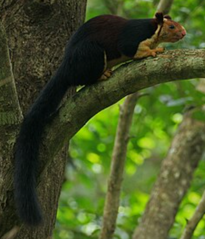
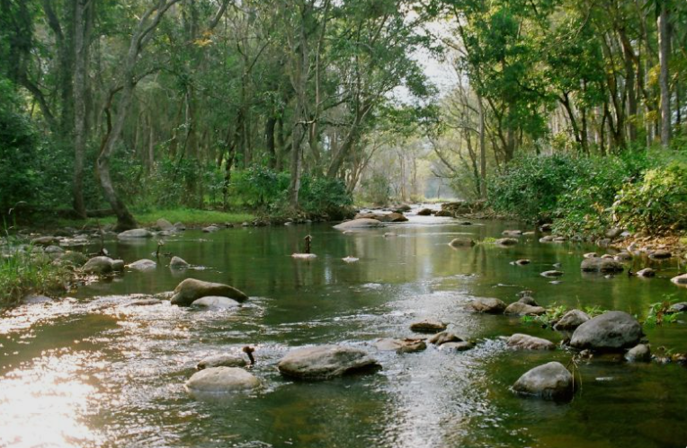
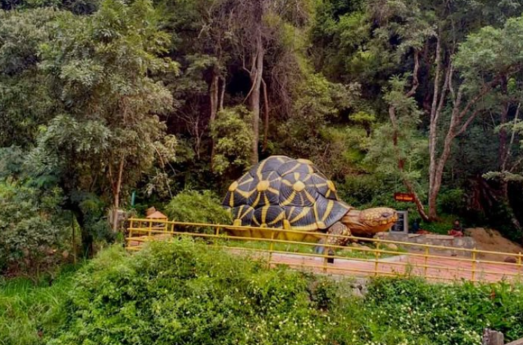
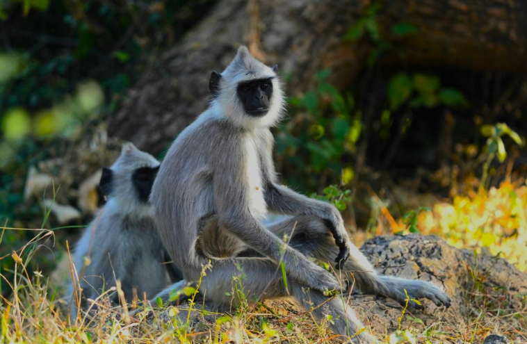
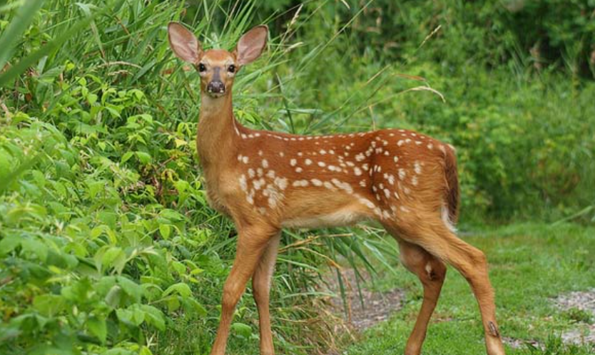

Chinnar Wildlife Sanctuary is a protected forest area located in the Idukki district of Kerala, near the Kerala–Tamil Nadu border. It is famous for its dry deciduous forests, sandalwood trees, and rich wildlife. The sanctuary is home to many species of animals, including elephants, gaur, sambar deer, spotted deer, langurs, crocodiles, and the rare Grizzled Giant Squirrel. It also has a wide variety of birds, butterflies, and medicinal plants.
Visitors can enjoy nature walks, trekking, wildlife watching, and guided eco-tourism activities while exploring the sanctuary. The Chinnar River flows through the forest, adding to its natural beauty. With its unique ecosystem, peaceful surroundings, and diverse wildlife, Chinnar Wildlife Sanctuary is an ideal destination for nature lovers, photographers, and adventure enthusiasts.





Chinnar Wildlife Sanctuary is a protected forest area located in Idukki District, Kerala, near Marayoor and the Kerala–Tamil Nadu border. Established in 1984, the sanctuary covers about 90.44 square kilometres and is part of the Western Ghats, a UNESCO World Heritage Site. It is famous for its dry deciduous forests, endangered Grizzled Giant Squirrel, elephants and rich biodiversity.
Chinnar Wildlife Sanctuary was established in 1984 by the Kerala Forest Department to protect the unique dry forests and wildlife of the Western Ghats. Today, it is one of Kerala's important protected areas and plays a major role in wildlife conservation and eco-tourism.
The sanctuary offers wildlife safaris, trekking, nature walks, bird watching and river-side camping. Visitors can also explore sandalwood forests, the Thoovanam Waterfalls and beautiful mountain landscapes.
The sanctuary contains dry deciduous forests, thorny scrub forests, sandalwood trees, medicinal plants, bamboo and many rare plant species. It is one of the few protected areas in Kerala with extensive dry forest vegetation.
Today, Chinnar Wildlife Sanctuary is one of Kerala's most important wildlife reserves. It is internationally recognized for conserving the endangered Grizzled Giant Squirrel and protecting the unique biodiversity of the Western Ghats. Thousands of tourists and researchers visit the sanctuary every year.